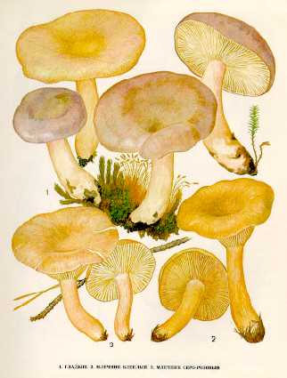

1.ГЛАДЫШ. МЛЕЧНИК ОБЫКНОВЕННЫЙ
Растет в лиственных и хвойных лесах, во влажных местах среди мхов, в августе -
сентябре, одиночно и группами.
Шляпка до 15 см в диаметре, плоская, с небольшой ямочкой посредине, слизистая,
гладкая. Окраска гриба весьма изменчива: сначала свинцово-или фиолетово-серая, потом
серо-красно-желтоватая, с едва заметными концентрическими зонами или без них. Мякоть
белая или слегка кремовая, хрупкая, мягкая.
Млечный сок белый, на воздухе становится желтоватым, очень горький, с запахом
селедки.
Пластинки нисходящие по ножке или приросшие к ней, тонкие, вначале желтоватые, с
возрастом розовато-кремовые, с ржавыми пятнами. Споровый порошок желтоватый.
Ножка до 8 см длины, до 3 см толщины, полая, гладкая, клейкая, желтоватая или одного
цвета со шляпкой.
Гриб условно съедобен, второй категории. Употребляется только соленым. Для
удаления едкого сока перед засолом грибы вымачивают, а затем бланшируют или
обливают кипятком, чтобы придать упругость мякоти.
2.МЛЕЧНИК БЛЕКЛЫЙ
Растет в смешанных и лиственных лесах, в сыроватых местах, в августе - сентябре,
часто и обильно.
Гриб похож на серушку. Шляпка до 8 см в диаметре, тонкомясая, плоско-выпуклая, у
зрелого гриба воронковидная, с извилистыми краями, влажная, липкая, сиренево-серая
или коричнево-серая, без зон. Мякоть беловатая или сероватая, вкус острый. Млечный
сок обычно белый, на воздухе становится оливково-серым.
Пластинки нисходящие, очень частые, у молодых грибов беловатые, у зрелых
желтовато-кремовые, при прикосновении сереющие. Споровый порошок бледно-охристый.
Ножка до 11см длины и до 2 см толщины, полая, гладкая, чуть бледнее шляпки.
Гриб условно съедобен, третьей категории. После отваривания пригоден для засола.
3.МЛЕЧНИК СЕРО-РОЗОВЫЙ
Встречается во влажных сосновых лесах, чаще по краям сфагновых болот, с июля по сентябрь.
Шляпка до 15 см в диаметре, ро-зовато-буроватая, иногда с серым оттенком, сначала (у молодых грибов) плоская, потом глубоковоронковидная, с завернутым краем, в сухую погоду с шелковистым блеском. Мякоть светло-желтая, палевая. Млечный сок водянисто-белый, на воздухе не изменяется, слабо острый.
Пластинки нисходящие по ножкам, вначале беловатые, потом палевые. Споровый порошок светло-охряный.
Ножка до 9 см длины, 1,5 см толщины, цилиндрическая, полая, одного цвета со шляпкой, вверху более светлая, мучнистая, внизу с беловатыми волокнами. Сухой гриб сильно пахнет кумарином.
Малоизвестный условно съедобный гриб. После отваривания (воду слить) идет для соления и маринования вместе с другими грибами.